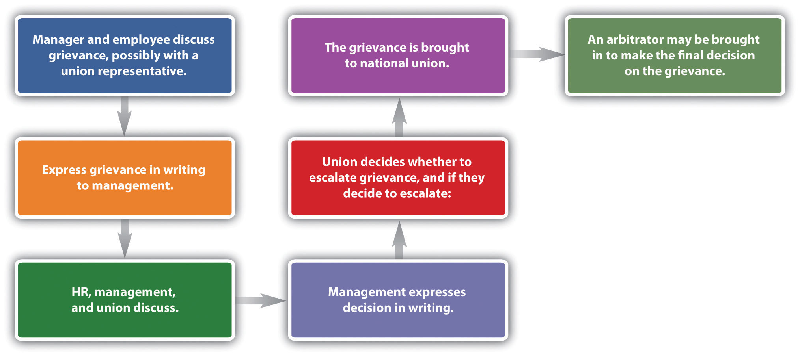
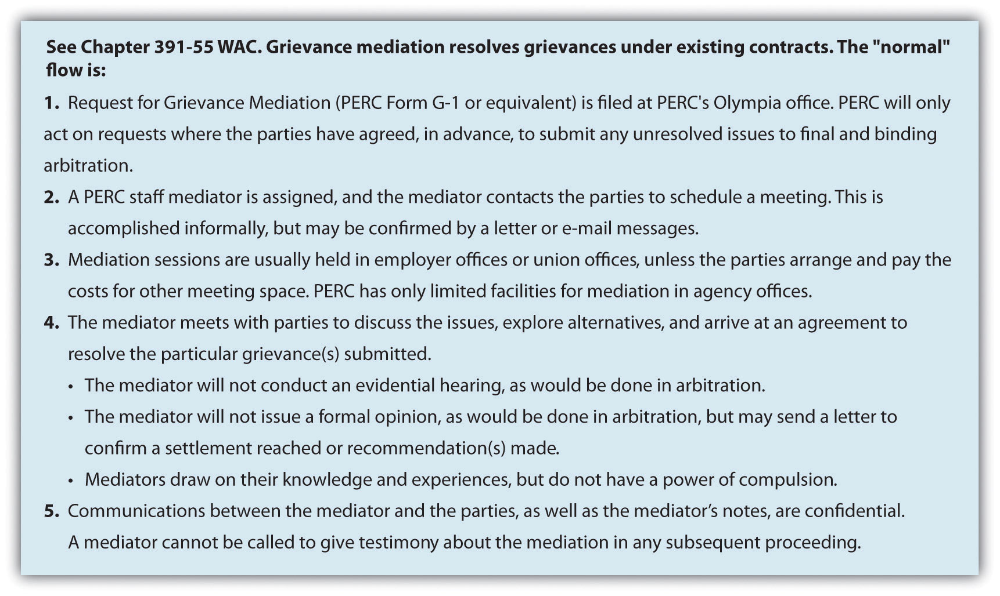

A grievance procedure or process is normally created within the collective bargaining agreement. The grievance procedureOutlined in the contract, the process by which contract violations are handled. outlines the process by which grievances over contract violations will be handled. As you have probably already identified, the grievance procedure is a formalized conflict, as we discussed in Chapter 9 "Handle Conflict and Negotiation". Learning how to handle this type of conflict takes self-management skills—or the ability to avoid taking things personally—and relationship management skills. This will be the focus of our next section.
A violation of the contract terms or perception of violation normally results in a grievance. The process is specific to each contract, so we will discuss the process in generalities. A grievance is normally initiated by an employee and then handled by union representatives. Most contracts specify how the grievance is to be initiated, the steps to complete the procedure, and identification of representatives from both sides who will hear the grievance. Normally, the human relations department is involved in most steps of this process. The basic process is shown in Figure 11.8 "A Sample Grievance Process".
Figure 11.8 A Sample Grievance Process
The discussion of labor unions in this chapter applies to many of the human relations skills we have discussed so far—for example, negotiation, handling conflict, teamwork, and communication. Without these important aspects, effective running of unions would not be possible. Because conflicts happen between union and management, the ability to manage the conflict in a positive way (relationship management emotional intelligence skill) can not only help the negotiations but also help you achieve success with a contract everyone is happy with.
While it pertains to all companies, human relations skills become that much more important to those that have a union environment where management and employees must work together. Conflict in these situations can result in major issues on both sides, such as grievances and strikes. Employing effective human relations skills can reduce conflict and raise productivity in a union environment.
The first step is normally an informal conversation with the manager, employee, and possibly a union representative. Many grievances never go further than this step, because often the complaint is a result of a misunderstanding.
If the complaint is unresolved at this point, the union will normally initiate the grievance process by formally expressing it in writing. At this time, HR and management may discuss the grievance with a union representative. If the result is unsatisfactory to both parties, the complaint may be brought to the company’s union grievance committee. This can be in the form of an informal meeting or a more formal hearing.
After discussion, management will then submit a formalized response to the grievance. It may decide to remedy the grievance or may outline why the complaint does not violate the contract. At this point, the process is escalated.
Further discussion will likely occur, and if management and the union cannot come to an agreement, the dispute will normally be brought to a national union officer, who will work with management to try and resolve the issue. A mediatorAn impartial third party called in to help resolve a grievance. Any recommendation or decision is not binding. may be called in, who acts as an impartial third party and tries to resolve the issue. Any recommendation made by the mediator is not binding for either of the parties involved. Mediators can work both on grievance processes and collective bargaining issues. For example, when the National Football League (NFL) and its players failed to reach a collective bargaining agreement, they agreed to try mediation.Associated Press, “NFL, Union Agree to Mediation,” February 17, 2011, accessed August 15, 2011, http://msn.foxsports.com/nfl/story/NFL-players-union-agree-to-mediation-federal-for-labor-talks-CBA-021711. In this case, the agreement to go to mediation was a positive sign after several months of failed negotiations. In the end, the mediation worked, and the NFL players started the 2011–12 season on time. In Washington State (as well as most other states), a nonprofit organization is available to assist in mediations (either grievance or collective bargaining related) and arbitrations. The goal of such an organization is to avoid disruptions to public services and to facilitate the dispute resolution process. In Washington, the organization is called the Public Employment Relations Commission (PERC). Figure 11.9 "The Mediation Process for the Public Employment Relations Commission in Washington State" shows the typical grievance handling process utilizing the free PERC services.
Figure 11.9 The Mediation Process for the Public Employment Relations Commission in Washington State
If no resolution develops, an arbitrator might be asked to review the evidence and make a decision. An arbitratorAn impartial third party who is selected by both parties in a grievance and who ultimately makes a binding decision in the situation. is an impartial third party who is selected by both parties and who ultimately makes a binding decision in the situation. Thus arbitration is the final aspect of a grievance.
Some examples of grievances might include the following:
Most grievances fall within one of four categories. There are individual/personal grievancesWhen one member of the union feels he or she has been mistreated and files a grievance., in which one member of the union feels he or she has been mistreated. A group grievanceOccurs if several union members have been mistreated in the same way and file a grievance. occurs if several union members have been mistreated in the same way. A principle grievanceA grievance that deals with basic contract issues surrounding items in the contract, such as pay or seniority. deals with basic contract issues surrounding seniority or pay, for example. If an employee or group is not willing to formally file a grievance, the union may file a union or policy grievanceA grievance initiated by the union if an employee or group is not willing to formally file a grievance. on behalf of that individual or group.
The important things to remember about a grievance are that it should not be taken personally and, if used correctly, can be a fair, clear process to solving problems within the organization.
This video shows a philosophical perspective of the grievance process for the Association of Flight Attendants union.